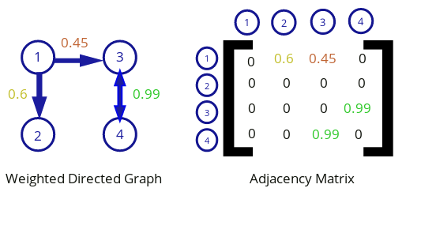
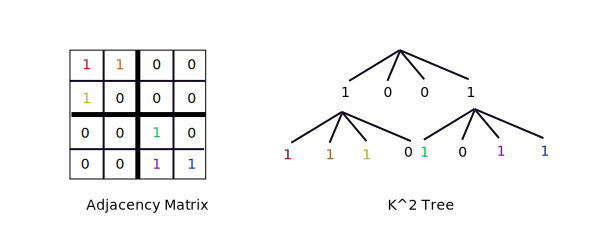
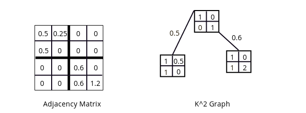
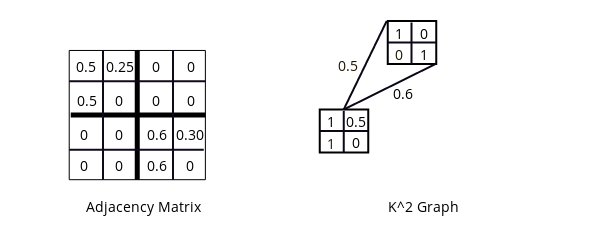

Neural network phenotype of a K2 genome.
Neural network phenotype of a K2 genome.
This series will cover the K2 Graph, a novel indirect encoding for neuroevolution. The reader should have a strong understanding of the NEAT algorithm by Kenneth Stanley and HyperNEAT before continuing. The research papers introducing these algorithms are quite accessible and don't require advanced mathematical knowledge. I highly recommend reading through them a couple of times.
- Evolving Neural Networks through Augmenting Topologies
- A Hypercube-Based Indirect Encoding for Evolving Large-Scale Neural Networks
- HyperNEAT User's Page
The K2 is an indirect encoding taking cues from HyperNEAT. Like HyperNEAT and its variants, it aims to generate phenotypes utilizing biologically inspired principles such as repetition, regularity, symmetry, hierarchy, and modularity. In addition, it is designed to use an evolvable substrate, meaning that the number of neurons can grow indefinitely and that the neural architecture is not fixed or chosen by a human programmer. Thus it is more an alternative to Evolvable Substrate HyperNEAT (ES-HyperNEAT) than to vanilla HyperNEAT.
The K2 Graph was designed with the intent of simplifying indirect encoding schemes conceptually and for implementation. It's matrix-based design lends itself to be implemented in modern tensor-based deep learning frameworks. Future posts will contain implementation details using Numpy, a popular Python library for scientific computing.
Adjacency Matrices
Let's imagine a set of neurons connected by directed weights. A neural network can be described in mathematical terms as a directed, weighted graph where the neurons are the nodes of the graph and the weights are the edges.
 Illustration of a Neural Network by CBurnett licensed under CC BY-SA 3.0
Illustration of a Neural Network by CBurnett licensed under CC BY-SA 3.0
A graph can be written in matrix form as an adjacency matrix. An adjacency matrix is a representation of a graph that is a type of square matrix where each element represents an edge. The correspending nodes connected by a weight are indicated by the row and column of the edge in the matrix.
 A weighted directed graph and its corresponding adjacency matrix.The K2 Graph heavily utilizes adjacency matrices and can be viewed as a nesting of adjacency matrices.
The K2 Tree
The K2 Tree is tree structure originally designed for efficiently compressing web graphs [1]. It represents an adjacency matrix as a tree structure where if a node contains a 1, it's subtree also contains a one and if a node contains a 0, the node is a leaf and has no subtree. All internal nodes have k2 children.
 An example of a K2 tree where k = 2.To go from the K2 Tree to the K2 Graph some generalizations will need to be made.
Going from Tree to Graph
The first necessary change to make K2 Tree into K2 Graph is the addition of real numbers. For the K2 Graph, real numbers can exist in the nodes and the links. Let's start with a simple example. Note that there is some restructing here to help make the difference between nodes and a links more explicit by packaging the nodes into matrices of k by k.
 An simple example of a K2 graph, again where k = 2.Giving values to the links gives allows for more expressive power so that different sub-matrices can have different weightings, which will be important for evolution.
Graph structures differ from tree structures in that they allow reuse of nodes. The K2 graph will thus be a Directed Acyclic Graph (DAG). In this example, the lower node is referred to twice but with a different weighting (0.5 and 0.6) each time.
 K2 graph with node reuse.Take a look at the picture below. Can you image a way to use a K2 Graph to roughly compress the adjacency matrix? Are there any symmetries or patterns in the adjacency matrix that can be exploited?
 Average Regional Connection Matrix of the Human Brain by Patric Hagmann, Leila Cammoun, Xavier Gigandet, Reto Meuli, Christopher J. Honey, Van J. Wedeen, Olaf Sporns licensed under CC Generic 2.5
Average Regional Connection Matrix of the Human Brain by Patric Hagmann, Leila Cammoun, Xavier Gigandet, Reto Meuli, Christopher J. Honey, Van J. Wedeen, Olaf Sporns licensed under CC Generic 2.5
In the next post, we'll see how K2 Graphs can be expressed as genes.
Part 2 of this seriesReferences
1. Brisaboa, N.R., Ladra, S., Navarro, G.: k2-trees for compact web graph representation. In: Karlgren, J., Tarhio, J., Hyyro, H. (eds.) SPIRE 2009. LNCS, vol. 5721, pp. 18-30. Springer, Heidelberg (2009)